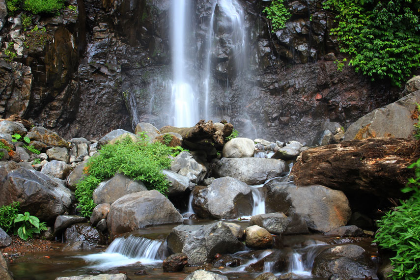
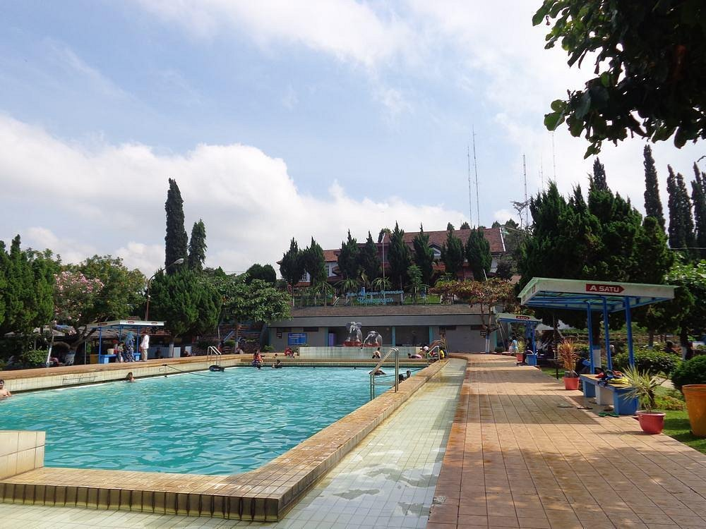
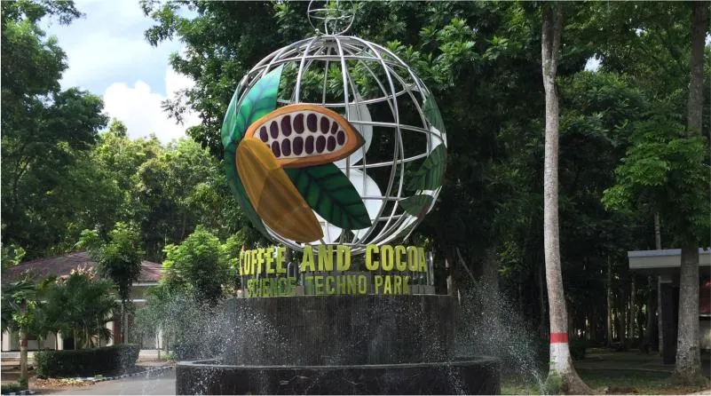

Destinasi agrowisata perkebunan teh bersejarah peninggalan era Belanda yang menawarkan hamparan kebun hijau, udara sejuk pegunungan, dan panorama matahari terbit.

Air terjun setinggi sekitar 82 meter dengan aliran air jernih dan deras yang dapat dicapai melalui jalur trekking melintasi perkebunan kopi dan hutan alami.

Kawasan agrowisata dataran tinggi berudara sejuk yang menawarkan panorama alam dari ketinggian, kolam renang pegunungan, kebun buah naga, serta area perkemahan.

Kawasan wisata edukasi dan riset yang mengajak pengunjung tur mengelilingi kebun serta mempelajari proses pengolahan biji kopi dan kakao hingga menjadi produk siap konsumsi.

Destinasi wisata bahari berpasir putih halus yang ikonik dengan gugusan batu karang raksasa di tepi laut serta panorama matahari terbit dan terbenam yang memukau.